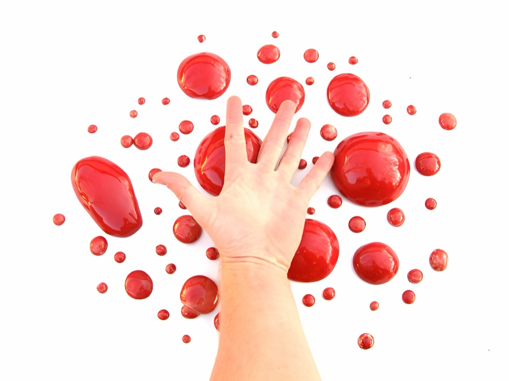

- LogosMarks and monograms for small businesses, wineries and workshops40 works
- Book coversCover designs from the art director years at Ulpius-ház Publishing23 works
- PrintPosters, packaging and editorial print work15 works
- DesignProduct and packaging design, ceramics and objects8 works
- Analog photographyFilm photography — portraits, places and experiments45 works
- Digital photographyDigital photography from travels and everyday life46 works
- ArtPaintings, illustration and street art22 works
- NotebooksHandmade notebooks with vintage press-photo covers — the vadonat.com project41 works